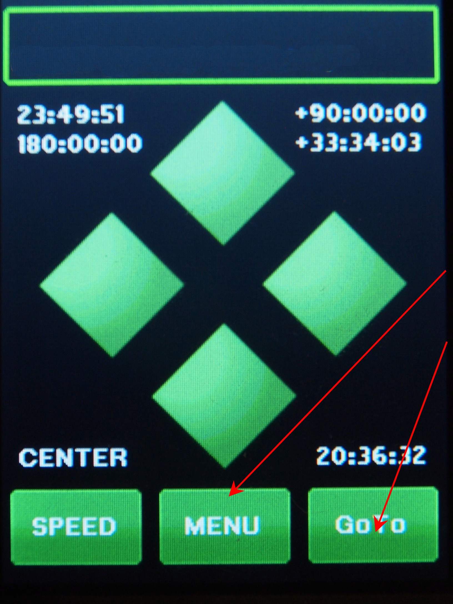
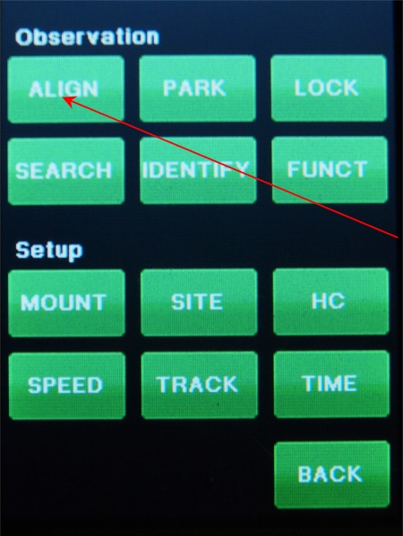
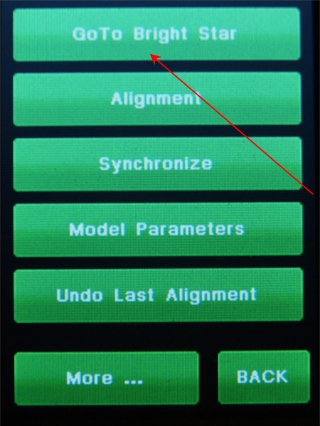

| Adding Stars to the Model - Manual method. |
|
This page show the steps to add one star to the Model and look at the
parameters using the manual method. There is also a semi-automatic method that you can use. |
|  |
1. There are two different ways to do this routine. You can Press the "MENU" button. or You can Press the GoTo Button. |
|  |
2. Select ALIGN |
|  |
3. Select GoTo Bright Star |